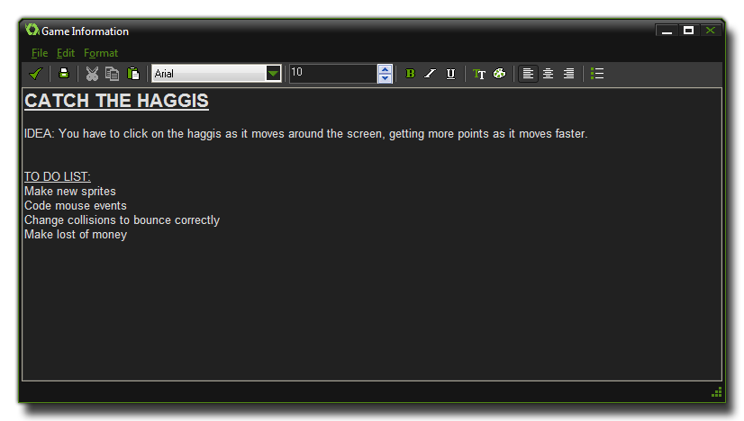

Beneath the resource tree on the left of the main GameMaker:
Studio IDE you have the Game Information. Clicking on
this will bring up a rich text editor as shown in the
following image:  The game information is basically a
scratch pad for you, where you can draught out ideas, to-do lists,
contact details and any other information that you may need at a
later date or that you don't want to forget. Unlike previous
versions of GameMaker this form cannot be shown to the
player and as such it is the ideal place to store snippets of
information and to plan your game.